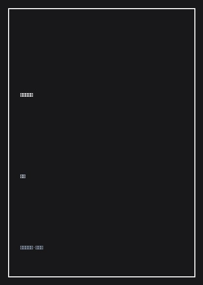

《阅读的故事》

总体观点
阅读是人类在短暂有限的生命中，唯一能够实现‘跨越时空与最伟大人性灵魂自由对话’的无上特权。唐诺指出：现代消费主义社会将阅读贬低为获取实用工具信息的‘快餐技能’，或者用无休止的畅销榜单绑架读者；然而真正的阅读是一场充满荆棘、困惑却惊心动魄的‘探险与逆风前行’。一本真正的好书绝不会平易近人地迎合你现有的认知舒适区，它必然要求你调动全部的心智储备，在艰涩的文本泥潭中拔足前行。
‘博尔赫斯式的书籍迷宫’构成了阅读宇宙的深层结构。没有一本书是孤立绝缘的孤岛，每一部伟大的经典（从荷马、莎士比亚到卡尔维诺、马尔克斯）都在其字里行间埋下了通向其他数百本书籍的隐秘线索与互文暗道。阅读的过程，本质上就是读者在无垠的书海星空下，手持作者留下的微弱烛火，自主绘制独一无二精神星图的创造性重构过程。
在功利主义甚嚣尘上的快节奏现代世界，坚持‘不求立竿见影回报的深度阅读’是对生命尊严的坚决捍卫。唐诺以其数十年如一日在台北咖啡馆每日长达八小时的纯粹阅读生活，向世人展示了读书人的从容气象：阅读不承诺带给你升官发财的世俗成功，但它能在你遭遇人生重创、虚无与绝望的寒夜中，提供一座不可剥夺的精神防波堤，让你在嘈杂荒诞的人间守住清醒自足的灵魂。
核心观点
-
1. 阅读的起点是承认困惑与‘不聪明’
许多人在阅读经典哲学或严肃文学时，因为读不懂第一章便感到自卑而迅速放弃。唐诺指出：读不懂才是正常的、高贵的开端。如果一本书每一句话你都能轻松读懂，说明它只是在重复你早已知晓的平庸偏见；勇敢停留在困惑中，心智才能被撑大破壳。
唐诺分享自己年轻时反复阅读列维-斯特劳斯《忧郁的热带》与博尔赫斯短篇小说：初读如坠云雾，直到在岁月的沉淀中重读第三遍、第四遍，某一个黄昏电光石火间突然洞穿作者苦心孤诣的结构全貌。 -
2. 二手阅读与专业读者的摆渡人职责
大众往往鄙视导读、书评等‘二手阅读材料’。然而面对人类三千年浩瀚的知识遗产，一个普通读者的生命跨度极其有限。专业优秀书评人扮演的是‘精神向导与摆渡人’角色，为你点出通向金矿的密道，避免初学者在茫茫书海中淹没于劣质垃圾出版物。
以博尔赫斯为世界文学经典撰写的序言集《私人藏书》为例：大师用短短两页纸便提炼出斯韦登伯格或爱伦·坡最核质的精神密码，点燃数百万读者的重读火焰。 -
3. 书籍的物理重量与岁月抚触的包浆
数字电子屏幕带来的是转瞬即逝的浮光掠影，而纸质实体书拥有沉甸甸的物理重量、纸张纤维气味、页边空白处的铅笔批注，以及多年后重新翻开时飘落的干枯枫叶。这些物理记忆构成了我们生命年轮的坚固锚点。
唐诺摩挲着手头一本边角磨损、纸页泛黄发脆的三十年前旧版《马尔克斯中短篇小说集》：书中不同时期深浅不一的墨水批语，如同一场横跨三十年自己与年轻时自己的促膝长谈。 -
4. 书房作为世界尽头的避难所
世俗社会的权力斗争、物欲追逐与生老病死在书房门外狂啸，而当你关上房门、拉开台灯翻开书本的刹那，整个人类的智慧银河瞬间为你静止并倾囊相授。在这里没有贫富贵贱，你与两千年前的柏拉图平起平坐、平等论辩。
引用文艺复兴思想家马基雅维利在流放乡村木屋中给友人的绝密信件：‘每至日落，我脱去白日沾满泥浆的粗布村服，穿上庄严的宫廷长袍，步入古人的圣殿与先哲对话，四个小时之内我不感烦恼、忘却贫困、不畏死亡。’ -
5. 阅读者的终极慷慨与时间抵抗
阅读是一场最慷慨的生命馈赠。作者将毕生几十年的生命结晶、创伤泪水与智慧火花浓缩于薄薄数百页书页中，以几杯咖啡的微薄售价向你全盘托出。每一个认真读完一部杰作的读者，都是在用自己的生命时间为全人类精神火种的延续投下一张神圣的选票。
回顾古罗马哲人塞涅卡在《论生命之短暂》中的金句：‘只有将时间留给与先哲沉思对话的人，才是真正活着的人；因为他们不仅度过了自己的岁月，更把前人所有的岁月都据为己有。’
全书结构
-
第1章 这段始于困惑的旅程
从现代人对阅读的焦虑与借口切入，剖析‘买书不读（买书癖）’的心理学机制，为所有在严肃阅读门槛前犹豫徘徊的心灵卸下心理包袱。
剖析书架上未读之书的‘反图书馆（Antilibrary）’价值：那些未读的书时刻提醒着我们自身的无知边界，是谦逊与求知欲的最佳催化剂。 -
第2章 专业读者：在书海中充当摆渡人
探讨出版人、翻译家、书评人在文明薪火相传中的神圣角色，传授如何识别伪劣书籍、建立个人精深书单的实战雷达。
分享自己作为台湾麦田出版社总策划期间，如何顶住商业亏损压力坚持翻译出版卡尔维诺全集与米兰·昆德拉名作的编辑理想主义坚守。 -
第3章 怎么读？那些关于阅读的技艺与偏见
破解速读、功利读书法的致命迷思，倡导‘慢读、精读、重读与交叉对读’，详解如何在文本留白处与作者展开高强度的智力拔河。
演示如何并列对比不同译本对莎士比亚《哈姆雷特》著名独白‘To be, or not to be’的细微措辞推敲，领悟语言翻译的精微与不能承受之重。 -
第4章 困惑与重读：伟大小说的迷宫探幽
以托尔斯泰《战争与和平》、普鲁斯特《追忆似水年华》与福克纳《喧哗与骚动》为标本，解析复杂庞大叙事结构对心智格局的终极拓宽。
解构马尔克斯《百年孤独》开篇第一句时间折叠艺术：‘多年以后，面对行刑队，奥雷里亚诺·布恩迪亚上校将会回想起父亲带他去见识冰块的那个遥远的下午’。 -
第5章 书籍的尽头：对抗遗忘与虚无的心灵灯塔
总结全书，将阅读升华为人类对抗生理衰老、时代遗忘与死亡虚无的终极精神武器，在字里行间收获从容丰盈的生命大平静。
描绘台北紫藤庐茶馆午后的一缕斜阳照在摊开的书页上，唐诺在咖啡香气中写下全书最后的祝福，字字珠玑，令人潸然泪下。